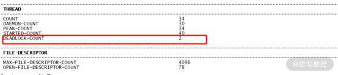
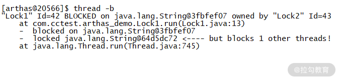
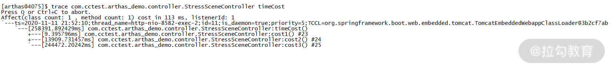
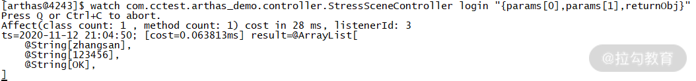
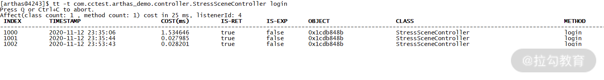
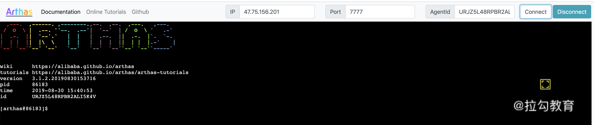
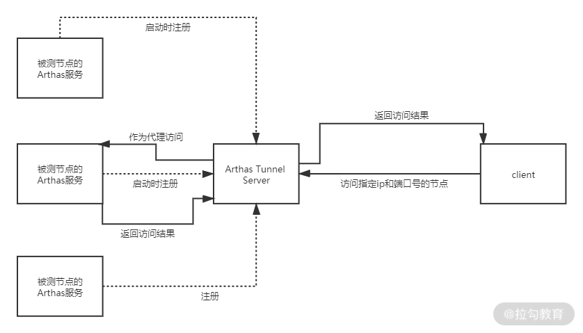

- 00 开篇词 为什么每个测试人都要学好性能测试？.md.html
- 01 JMeter 的核心概念.md.html
- 02 JMeter 参数化策略.md.html
- 03 构建并执行 JMeter 脚本的正确姿势.md.html
- 04 JMeter 二次开发其实并不难.md.html
- 05 如何基于 JMeter API 开发性能测试平台？.md.html
- 06 Nginx 在系统架构中的作用.md.html
- 07 你真的知道如何制定性能测试的目标吗？.md.html
- 08 性能测试场景的分类和意义.md.html
- 09 如何制定一份有效的性能测试方案？.md.html
- 10 命令行监控 Linux 服务器的要点.md.html
- 11 分布式服务链路监控以及报警方案.md.html
- 12 如何把可视化监控也做得酷炫？.md.html
- 13 Docker 的制作、运行以及监控.md.html
- 14 如何从 CPU 飙升定位到热点方法？.md.html
- 15 如何基于 JVM 分析内存使用对象？.md.html
- 16 如何通过 Arthas 定位代码链路问题？.md.html
- 17 如何应对 Redis 缓存穿透、击穿和雪崩？.md.html
- 18 如何才能优化 MySQL 性能？.md.html
- 19 如何根治慢 SQL？.md.html
- 20 结束语 线上全链路性能测试实践总结.md.html
16 如何通过 Arthas 定位代码链路问题？
前两讲我分别讲述了 JVM 线程分析和内存分析的实操技巧及注意点，让你可以从表象的硬件瓶颈逐渐深入到定位代码问题。类似于这样的定位方式，有一个共同点是会呈现出硬件层或者表象的一些异常。
然而并不是所有的性能问题都可以通过这样的方式去定位，有时候接口的 TPS 很低，但是各项资源占用也很低，你很难通过资源的异常去找到诊断的切入口。这样的情况也是很常见的，除了可以用《11 | 分布式服务链路监控以及报警方案》中讲到的链路监控工具定位外，这一讲我还会带来一个代码级定位工具——Arthas，Arthas 不仅仅能够让你看到 JVM 的运行状态去定位性能问题，对于很多线上代码异常问题的排查，Arthas 也是手到擒来。
下面的场景你一定很熟悉：
- 如果线上出现了偶发性问题，我们需要花费大量时间一步步排查，日志里的每个细节都不能错过，如果线上不能直接得出结论，还需要线下再去复现，很消耗时间和精力；
- 某行代码没有被执行，也没有出现报错信息，按照传统的方法可能会去加一些判断日志，这就涉及再次上线的问题，很多公司上线流程需要审批，这增加了内耗。
而熟练使用 Arthas 这个工具便可以很好地解决以上问题，接下来我将介绍下 Arthas 以及实战中怎么用 Arthas 定位问题。
Arthas 是什么
Arthas 是阿里提供的一款 Java 开源诊断工具。能够查看应用的线程状态、JVM 信息等；并能够在线对业务问题诊断，比如查看方法调用的出入参、执行过程、抛出的异常、输出方法执行耗时等，大大提升了线上问题的排查效率。
Arthas 的使用方法
首先我们用以下命令下载 Arthas：
wget https://alibaba.github.io/arthas/arthas-boot.jar
Arthas 提供的程序包是以 jar 的形式给出，因此我们可以看出 Arthas 本质也是个 Java 应用。
然后使用 java -jar 命令启动，如下所示：
java -jar arthas-boot.jar
输入启动命令后会跳出选项让你选择要监控的后台 Java 进程，如下代码所示：
[[email protected] ~]# java -jar arthas-boot.jar
[INFO] arthas-boot version: 3.3.3
[INFO] Found existing java process, please choose one and input the serial number of the process, eg : 1. Then hit ENTER.
* [1]: 689 cctestplatform.jar
[2]: 31953 unimall.jar
[3]: 14643 sentinel-dashboard-1.7.2.jar
[4]: 20421 org.apache.zookeeper.server.quorum.QuorumPeerMain
[5]: 10694 demo-0.0.1-SNAPSHOT.jar
其中序号表示的就是 Arthas 自动识别的所在服务器的 Java 进程，然后输入要监控的进程的序号并回车，Arthas 便会接着启动，出现 Arthas Logo 之后便可以使用 Arthas 了，如下代码所示：
5
[INFO] arthas home: /root/.arthas/lib/3.4.4/arthas
[INFO] Try to attach process 10694
[INFO] Attach process 10694 success.
[INFO] arthas-client connect 127.0.0.1 3658
wiki https://arthas.aliyun.com/doc
tutorials https://arthas.aliyun.com/doc/arthas-tutorials.html
version 3.4.4
pid 10694
另外如果你想要打印帮助信息可以在启动命令后面加 -h 来完成，如下所示：
java -jar arthas-boot.jar -h
Arthas 实操演示
1.利用 Arthas 线程相关命令定位死锁问题
在排查问题前我们先了解下死锁，死锁是指由于两个或者多个线程互相持有对方所需要的资源，导致这些线程处于等待状态，无法前往执行。如果没有外力的作用，那么死锁涉及的各个线程都将永久处于循环等待状态，导致业务无法预期运行，所以我们的代码要避免死锁的情况。
死锁就好比打游戏排位的时候， A 和 B 不能选相同的英雄，A 选了诸葛亮，但是突然间后悔了，想重新选貂蝉，但是貂蝉已经被 B 选了，但是 B 选择之后也后悔了，想重新选诸葛亮，但是诸葛亮已经被 A 选了。这个时候 A 和 B 都不让步，结果是谁都无法选到想要的英雄。
死锁的代码演示如下：
//线程Lock1代码示意
while(true){
synchronized("obj1"){
Thread.sleep(3000);//获取obj1后先等一会儿，让Lock2有足够的时间锁住obj2
synchronized("obj2"){
System.out.println("Lock1 lock obj2");
}
}
}
//线程Lock2代码示意
while(true){
synchronized("obj2"){
Thread.sleep(3000); //获取obj2后先等一会儿，让Lock1有足够的时间锁住obj1
synchronized("obj1"){
System.out.println("Lock2 lock obj1");
}
}
}
把以上代码放到服务器中执行，然后我们可以使用 Arthas 的 jvm 命令查看到线程死锁数目为 2，说明程序发生了死锁，如下图所示：

图 1：死锁示意图
接下来我们输入 thread -b 命令查看当前阻塞其他线程的线程，然后我们可以看到 Lock 1 被阻塞了，访问的资源被 Lock 2 占用，如图 2 所示，根据提示的行数我们便能找到死锁位置，对代码进行优化。

图 2：thread 演示死锁详情图
2.使用 trace 命令查看耗时
我们写几个不同循环次数的方法，分别代表方法耗时不同，代码如下：
//示例代码,timeCost是个接口
public String timeCost(){
cost1();
cost2();
cost3();
.......
}
private void cost3() {
//进行200万次循环......
}
private void cost2() {
//进行10万次循环......
}
private void cost1() {
//进行10次循环......
}
部署之后我们使用 trace 来查找最耗时的方法，在此过程中需要知道包名、类名，以及方法的名字。上述代码方法所在包名为 com.cctest.arthas_demo.controller，类名为 StressSceneController，所以我们需要输入如下 trace 命令：
trace
com.cctest.arthas_demo.controller.StressSceneController timeCost
输完命令后回车，然后 arthas 程序就进入了等待访问状态。这时候访问接口 /timeCost，我们就可以看到被测程序台在疯狂打印日志，等结束之后，arthas 命令窗口便输出了各方法耗时时间，如图 3 所示：

图 3：方法耗时详情
我们可以看到 timeCost 方法总耗时 258391ms：
- cost 1 调用耗时 9 ms；
- cost 2 调用耗时 13909 ms；
- cost 3 调用耗时 244472 ms。
cost 2 和 cost 3 方法耗时都比较长，当你能够定位到方法级别的消耗时长时，基本已经能够找到问题的根因了。
3.使用 watch 命令观察被测方法的参数和返回值
当遇到线上数据问题时，我们一般有两种查找问题的途径：
- 在开发环境中模拟线上数据来复现问题，不过因为环境等各方面的不同，很多情况下模拟数据复现都有难度；
- 在生产日志里查找线索，如果没有相关方法的入参，以及没打印返回值的话，就难以找到有效的信息。
这两种传统查找问题的方式都存在一定的局限性，而使用 Arthas 的 watch 命令可以很方便地根据观察方法入参和出参来判断是否正确定位了代码问题。
为了能够让你更清楚地看到方法名和出参入参，我写了一段示例代码，如下所示：
@GetMapping("/login")
public String login(@RequestParam(value="userName") String userName, @RequestParam(value="pwd")String pwd){
return "OK";
}
然后我们输入 watch 命令，其中 login 后面指定了需要控制台输出的内容，params[0] 代表第一个参数，如果参数有多个，只要 params 加上下标即可，returnObj 代表返回值，示意代码如下：
watch com.cctest.arthas_demo.controller.StressSceneController login "{params[0],params[1],returnObj}"
你可以看到输入上述命令后的返回信息如下：

图 4：watch 返回信息
4.使用 tt 命令定位异常调用
tt 与上面的 watch 的命令有些类似，都可以排查函数的调用情况。但是对于函数调用 n 次中有几次是异常情况，用 watch 就没有那么方便，使用 tt 命令就可以很方便地查看异常的调用及其信息。
使用 tt 命令示意如下：
tt -t com.cctest.arthas_demo.controller.StressSceneController login
然后我们访问接口，每次访问的状态和结果显示如图 5 所示：

图 5：tt 的返回信息
从图中可以看出，tt 显示的信息比 watch 全面。其中 IS-RET 项如果为 false，即为错误的调用。
以上部分介绍了 Arthas 命令在实际例子中的使用，我是通过命令行的方式来演示的，所以你需要登上服务器。之前有提到过，并不是所有的同学都有权限直接进行服务器的操作，那面对这样的情况如何使用 Arthas 呢？其实也是有解决方法的，接下来我们将介绍通过 Web 的方式操作 Arthas。
通过 Web 的方式操作 Arthas
Arthas 提供了客户端访问程序 Arthas Tunnel Server，这样我们便可以操作 Arthas 了，接下来我介绍下 Arthas Tunnel Server 的操作步骤以及操作原理。
1.Arthas Tunnel Server 的操作步骤
（1）下载 arthas-tunnel-server.jar，点击下载地址；
（2）把 Arthas Tunnel Server 部署到能和线上服务器通信的目标服务器；
（3）确保线上服务器启动了 Arthas，线上启动 Arthas 的操作命令，如下所示：
java -jar arthas-boot.jar --tunnel-server 'ws://目标服务器ip:目标服务器port/ws' --target-ip
- 这里说的 target-ip 是指被测程序所在服务器的 IP；
- 目标服务器即 Arthas Tunnel Server 启动的服务器，端口号默认是 8080。
（4）在浏览器中输入 http://目标服务器ip:目标服务器port，就可以访问 WebConsole，如图 6 所示：

图 6：Web 方式 Arthas 启动
然后我们输入 ip、port 和 agentid 就可以连上被测程序，并且可以开始对被测程序输入 Arthas 命令。接下来的 Arthas 的使用和命令行方式是一样的，不再赘述。
2.Arthas Tunnel Server 的操作原理
通过 Arthas Tunnel Server 的操作步骤，我们可以总结出它实现 Web 访问的原理：所有节点的 Arthas 服务启动都会向注册中心（Arthas Tunnel Server）注册，注册中心维护了一个节点列表，当客户端发起访问某个节点，Arthas Tunnel Server 便会从维护的节点列表找到与请求的 ip 和端口号对应的节点进行访问，然后把访问结果返回给客户端。具体流程如图 7 所示：

图 7：Arthas Tunnel Server 原理图
通过 Web 方式使用 Arthas 与我们上面所说的非 Web 的方式最大的不同：
- Web 方式可以授权连接之后通过浏览器输入 Arthas 命令；
- 非 Web 方式则是直接 ssh 连接服务器输入命令。
两者比较起来 Web 方式虽然操作麻烦些，不过在权限管控比较严格的情况下提供了使用 Arthas 的可行性。
总结
这一讲我主要介绍了 Arthas 是什么、为什么使用 Arthas，以及通过实际操作演示 Arthas 是怎么实时定位代码问题的，并且为你介绍了 Arthas Tunnel Server 的操作步骤以及原理。上面第三部分的 4 个操作实例都是比较典型的排查线上问题的方式，通过实例的演示也能看出来 Arthas 的强大和便捷性。